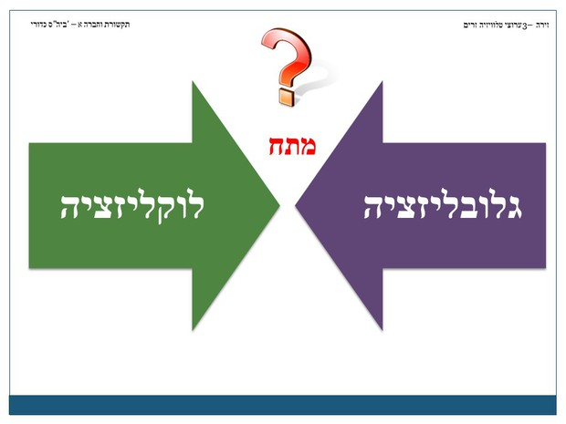
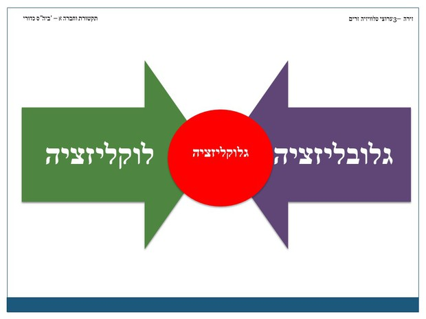
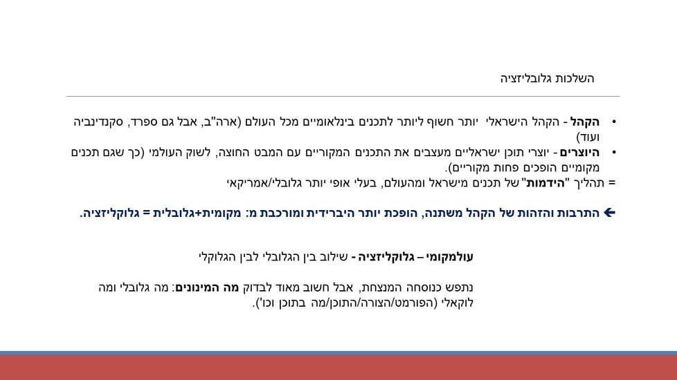
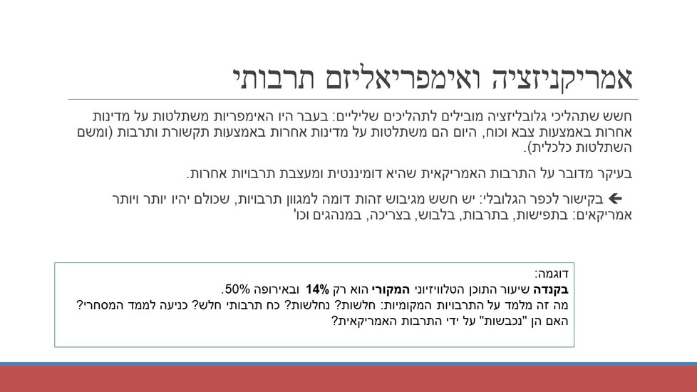

תהליכי גלובליזציה אינם מוגבלים רק לתקשורת. משמעם מעבר חופשי ונח של אנשים, סחורות, כלכלה ורעיונות בין מדינות. תהליך כזה מכרסם במרכזיות של מדינת הלאום. לאמצעי התקשורת – בעיקר לערוצי הטלוויזיה ולאינטרנט – יש תפקיד מרכזי בהפיכת העולם ל"כפר גלובלי" ובהתפשטות תהליכי הגלובליזציה. בזירה הנוכחית נתמקד עוד בשני מושגים: אימפריאליזם תרבותי ואמריקניזציה.
נדגיש את החשיבות של הגלובליזציה לתהליכים של גיבוש זהות: הזהות של כל אחד מאיתנו אינה מוגבלת ל"כאן ועכשיו", אלא היא זהות היברידית, המשלבת בין הלוקאלי לבין הגלובלי. כל אחד מאיתנו חשוף למגוון מסרים, מקומיים וגלובליים, וכולם לוקחים חלק בעיצוב הזהות ובגיבושה.
תהליכים אלו באים לידי ביטוי גם ביצירת תכנים, כשגם יוצרים ישראליים אינם מכוונים רק לקהל המקומי, אלא לקהל הבינלאומי ובעיקר האמריקאי. מכאן שגם יצירות מקומיות, שלהן תפקיד מרכזי בעיצוב זהות ישראלית מקורית ומקומית, הופכות להיות יותר בעלות אופי בינלאומי ואמריקאי.
נדון גם במגמה של תלות המדינות והתרבויות היותר חלשות בתרבויות החזקות יותר. כיצד כסף ועוצמה מסחרית לוקחת חלק בעיצוב תרבויות וזהויות במקומות רחוקים וחלשים מהם. מכן תלמידים יוכלו לפתח חשיבה ביקורתית ועצמאית לגבי מקור התכנים אותם הם צורכים וההשלכות שלהם על גיבוש זהותם העצמית.
דטרמיניזם = לקבוע מראש, אין אפשרות בחירה והדבר קבוע מראש. דטרמיניזם טכנולוגי – הטכנולוגיה היא הגורם הקובע את שאר הגורמים.
בהקשר שלנו – גישת הדטרמיניזם הטכנולוגי בהקשר התקשורתי: הטכנולוגיה של התקשורת הדומיננטית בכל חברה תעצב את כל שאר המרכיבים: את החברה, את התרבות, את האופן בו האנשים יחשבו וכן הלאה. הביטוי המפורסם בהקשר זה הוא של מארשל מקלואן: המדיום הוא המסר. כלומר, פחות משנה התוכן, אלא המדיום בו מועבר התוכן הוא המסר המרכזי, המדיום מעצב את המסרים.
לדוגמה, חברה שמבוססת תקשורת מודפסת תעודד דחיית סיפוקים. חברה שמבוססת תקשורת אלקטרונית כמו טלוויזיה תצמצם את הזמן והמרחב ותעצב "כפר גלובלי" בו תהיה הזדהות בין האזרחים על פני הגלובוס.
מבחינה זו כדאי לחשוב מה ההשלכות של תקשורת דיגיטלית ורשתות חברתיות על החיים שלנו. האם המדיום החדש מעצב חברה חדשה? פרטים חדשים?
מעבר מהיר וקל יחסית של אנשים, סחורות ורעיונות על פני העולם. כתוצאה משכלולים טכנולוגיים וכלכליים החלה מגמה הולכת וגוברת של תנועה חופשית.
גלובליזציה היא תהליך כלכלי-חברתי-פוליטי-תרבותי שאין לו ממד חיובי או שלילי. לגלובליזציה השלכות בנושא זהות ותרבות – תנועה חופשית של רעיונות ותכנים תרבותיים פועלת לרוב לטובת החזק שתרבותו הופכת דומיננטית גם במקומות מחוץ למדינה המקורית. ראו למשל אימפריאליזם תרבותי או אמריקניזציה.
play_circle_filledגלובליזציה ותרבות
play_circle_filledלוקאלי – מקומי. לוקאליזציה – לעשות משהו מקומי. המושג מובא בתגובה למושג גלובליזציה. בעוד גלובליזציה מדגישה את ההשפעות מהעולם הרחב, לוקאליזציה מדגישה את ייצור התרבות המקומית, לדוגמה, הפקות מקור לטלוויזיה, קולנוע מקומי ועוד. לעיתים לוקאליזציה יכולה להיות תגובת-נגד לגלובליזציה.
שילוב בין שני מונחים שנמצאים בעימות: גלובליזציה ולוקאליזציה. גלוקליזציה היא התאמת תכנים מקומיים לתוצרי תרבות מיובאים. לדוגמה, ליהוק ישראלי לתוכניות בפורמט גלובלי (האח הגדול, הישרדות, משחקי השף).
ברמה המסחרית כלכלית אפשר לתת דוגמה את מקדונלדס שמציג אוכל אחיד בכל העולם, אבל מתאים לכל מקום משהו מקומי.
דוגמאות מסכמות להבדלים - גלובליזציה, לוקליזציה, גלוקליזציה. שימו לב למיקום הסמיילי...
  דימוי שלפיו העולם נעשה כפר אחד קטן. המושג משלב שני מושגים סותרים: כפר (אינטימי) וגלובלי (עולם). כוונתו של מרשל מקלואן הייתה שהתרבות האלקטרונית (רדיו וטלוויזיה) מאפשרת לאנשים מתרבויות שונות לצרוך את אותם התכנים, ובכך מיטשטשים ההבדלים.
play_circle_filledהשתלטות של מדינה/תרבות חזקה על מדינות/תרבויות חלשות ממנה באמצעים תרבותיים (ולא צבאיים). יתכן מצב שבו התרבות של מעצמה הופכת לדומיננטית, מחלישה ואף מוחקת תרבויות מקומיות ככלי לשליטה פוליטית וכלכלית.
עיצוב תרבויות במקומות שונים בעולם באופן שהולך ודומה לתרבות האמריקאית. השפעת התרבות האמריקאית על חברות שונות שהופכות יותר ויותר דומות לה, וזאת לא בשל כיבוש צבאי אלא בשל השפעה תרבותית. ביטויים לאמריקניזציה: הפצת ערכים אמריקאים (אינדיבידואליות, שוק חופשי), מוצרים אמריקאים (קוקה קולה, אפל) והשפה האנגלית.
play_circle_filled